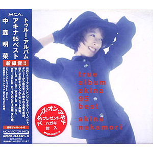

最佳专辑：第6张
发行年份：1995年
发行日期：12月6日
Wild Disc
| 歌名 | 作词 | 作曲 | 编曲 |
|---|---|---|---|
| 飾りじゃないのよ涙は (renewal) | 井上陽水 | 井上陽水 | 是永巧一 |
| Tokyo Rose | 中森明菜・上澤津孝 | MASAKI | BRIAN SETZER |
| Tattoo (renewal) | 森由里子 | 関根安里 | 是永巧一 |
| Gaia 〜地球のささやき〜 | 夏野芹子 | 井上日徳 | 奈良部匠平 |
| Blonde (renewal) | BIDDU-WINSTON SELA / 麻生圭子 (日本語詞) | BIDDU-WINSTON SELA | 樫原伸彦 |
| 愛撫 | 松本隆 | 小室哲哉 | 小室哲哉 |
| Desire -情熱- (renewal) | 阿木燿子 | 鈴木キサブロー | 岩崎文紀 |
World Disc
| 歌名 | 作词 | 作曲 | 编曲 |
|---|---|---|---|
| ミ・アモーレ〔Meu amor é･･･〕(renewal) | 康珍化 | 松岡直也 | 藤原いくろう |
| ジプシー・クイーン (renewal) | 松本一起 | 国安わたる | 向谷実 |
| 原始、女は太陽だった | 及川眠子 | MASAKI | 岩崎文紀 |
| Tango noir (renewal) | 冬杜花代子 | 都志見隆 | 藤原いくろう |
| 月華 | 松井五郎 | 梶原秀剛 | 松本晃彦 |
| 二人静 -「天河伝説殺人事件」より (renewal) | 松本隆 | 関口誠人 | 向谷実 |
| Shangrila (附赠曲目) | 夏野芹子 | 岩崎文紀 | 岩崎文紀 |
Whisper Disc
| 歌名 | 作词 | 作曲 | 编曲 |
|---|---|---|---|
| スローモーション (renewal) | 来生えつこ | 来生たかお | 藤原いくろう |
| セカンド・ラブ (renewal) | 来生えつこ | 来生たかお | 岩崎文紀 |
| Liar (renewal) | 白峰美津子 | 和泉一弥 | 向谷実 |
| 陽炎 | 中森明菜 | 玉置浩二 | 鳥山雄司 |
| 難破船 (renewal) | 加藤登紀子 | 加藤登紀子 | 佐山雅弘 |
| 水に挿した花 (renewal) | 只野菜摘 | 広谷順子 | 藤原いくろう |
| 予感 (renewal) | 飛鳥涼 | 飛鳥涼 | 樫原伸彦 |
首发规格：3CD: MVCD-36001~3
唱片公司：MCA Victor
排行榜：Oricon公信榜专辑周榜第16位